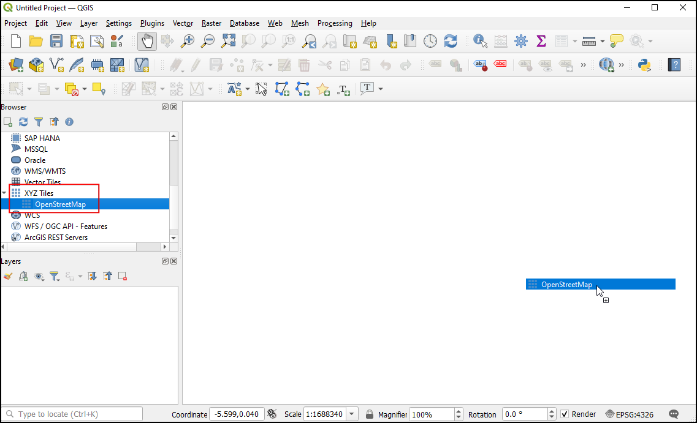
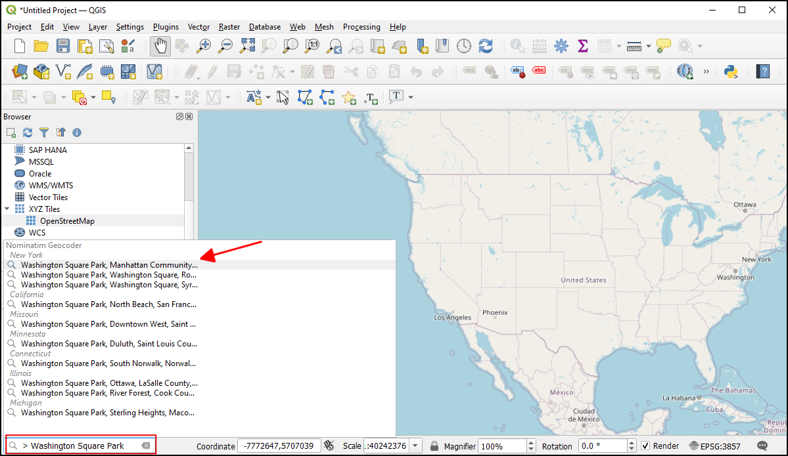
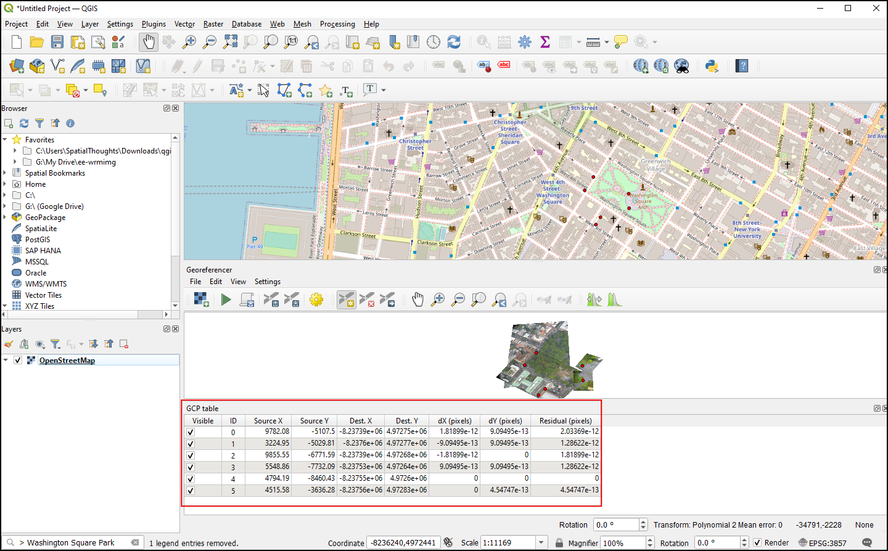

Ujaval Gandhi
Ujaval GandhiПространственная привязка снимков (QGIS3)¶
В руководстве Georeferencing Topo Sheets and Scanned Maps (QGIS3), мы привели базовые сведения о процессе привязки в QGIS. Речь шла о «скалывании» координат с отсканированного листа карты и ввода их вручную в качестве контрольных точек. Однако часто приходится привязывать изображения, на которых не указаны плоские координаты (нет пересечения координатных линий на карте). Данное руководство описывает методы привязки изображений для подобных ситуаций.
Обзор задачи¶
Осуществим привязку высококачественного снимка, сделанного с воздушного шара по координатам из OpenStreetMap.
Также вы научитесь¶
Применять XYZ тайлы в качестве базовой карты QGIS.
Применять встроенный геокодер (Nominatim Geocoder).
Задание пользовательского значения для «нет данных» при отображении слоя.
Получение данных¶
В данном упражнении будем использовать снимок, сделанный с воздушного шара от The Public Laboratory. В архиве имеются также и геопривязанные изображения, но нас интересует снимок без привязки для выполнения ее в QGIS.
Загрузите JPG изображение Washington Square Park, New York. Это можно сделать, щелкнув на JPG правой кнопкой мыши и выбрав Save link as….
Вы можете напрямую скачать копию набора данных, пройдя по ссылке ниже:
Порядок действий¶
Мы будем снимать координаты для привязки, используя картографическую подложку OpenStreetMap. QGIS3 имеет встроенную поддержку тайловых слоев, которые также называют «XYZ-слоями», поскольку состоят из отдельных фрагментов (тайлов), каждый из которых описывается тремя числами - координатами его местоположения (X, Y) и масштабом (Z). Слой OpenStreetMap может быть загружен из Browser Panel, группа XYZ Tiles, для чего его необходимо перетащить в область карты. После загрузки слоя обратите внимание на систему координат и проекцию, которые указаны в правом нижнем углу окна приложения. Для слоя OpenStreetMap установлена проекция
EPSG 3857 Pseudo Mercator. Важно помнить о данном параметре, поскольку координаты, которые мы снимем с карты в процессе привязки, будут именно в этой проекции.

Примечание
По этой ссылке вы найдете подробную информацию об XYZ-тайлах и о том, как добавить в QGIS другие картографические подложки.
Привяжем снимок
Washington Square Park, New York. Вы можете сами перейти к парку на карте. Однако в версиях QGIS 3.20 и выше имеется встроенный геокодер: Nominatim Geocoder. Перейдите в поле поиска в левом нижнем углу QGIS. Выберите поиск через геокодер:>. Searching for> Washington Square Park.В качестве ответа вы увидите различные адреса, соответствующие запросу. Выберите нужный.

Теперь Вашингтон Сквер Парк будет расположен по центру полотна карты. Начнем привязку: запустите модуль Georeferencer в меню Raster –> Georeferencer.
Примечание
Для версий QGIS 3.26 и выше, модуль Georeferencer (Геопривязка) запускается из меню .

Для привязки изображения будем использовать координаты, сколотые с OpenStreetMap. Сперва настроим модуль Геопривязки так, чтобы он был доступен с главного экрана: Выберите Configure Georeference from (Параметры геопривязки).

Поставьте галочку напротив Show georeferencer window docked и нажмите OK.

Теперь окно Georeferencer окажется встроено в основное окно QGIS. Загрузим растровое изображение: нажмите на кнопку Open Raster в окне Georeferencer и перейдите к загруженному файлу. Нажмите Open.

Прежде, чем добавлять Контрольные (Опорные) Точки (GCP), необходимо задать параметры трансформации. Нажмите на Transformation Settings. Выберите Transformation type -
Polynomial 2. Про отличия разных типов трансформации читайте подробнее в QGIS Documentation Как мы замечали ранее, система координат нашей базовой карты -EPSG 3857 Pseudo Mercator. Ее же и укажем в поле Target CRS. Имя в Output raster можно оставить по умолчанию, а сжатие установить наLZWв разделе Compression. При необходимости поставьте галочку напротив Use 0 for transparency when needed. Для того, чтобы сохранить координаты контрольных точек в отдельный файл, поставьте галочку напротив Save GCP points. Убедитесь, что также стоит галочка на Load in QGIS when done . Нажмите OK.

Теперь нажмите на кнопку Add Point на панели инструмента и выберите на снимке легко опознаваемую точку: углы зданий, пересечения, фонарные столбы и т.д. Когда Вы выберите точку на снимке, появится всплывающее меню, в котором Вам будет предложено ввести ее координаты. Нажмите на кнопку From map canvas.

В слое карты
OpenStreetMapщелкните на точку, соответствующую выбранной на снимке. Координаты точки появятся в списке как только Вы щелкните по карте. Нажмите Ok.

Примечание
Совет: Если в качестве контрольной точки выбирается угол здания, указывайте точку на фундаменте (нижней части здания). Большинство аэроснимов делаются под углом, поэтому точка на к крыше, к примеру, приведет к погрешности привязки.
Тем же способом выберите не менее 6 точек, которые легко опознаются на снимке и базовой карте. Как только у Вас наберется минимально необходимое число (6) точек, то рядом с координатами вы увидите значения
dX,dY, andResidual(невязка). Обычно, если какой-то точке соответствует особенно большой сдвиг или невязка. то эта точка введена с ошибкой. Ее можно удалить и наколоть снова.

Как только Вас устроит точность контрольных точек, нажмите Start georeferencing. Будет запущен процесс трансформации снимка и создания растрового изображения. Когда процесс завершится, в QGIS вы увидите новый растровый слой. Закройте окно Georeferencer.

Нажмите на иконку Open layer styling panel и перейдите во вкладку Transparency tab. Напротив Additional no data value укажите значение
255. Это уберет белые границы вокруг растра. Теперь у Вас имеется привязанное растровое изображение, аккуратно наложенное на базовую карту.

{kind=link}
Примечание
Обычно у 8-битных изображения значения пикселей варьируются от 0 до 255, где 0 - черный, 255 - белый.
If you want to give feedback or share your experience with this tutorial, please comment below. (requires GitHub account)